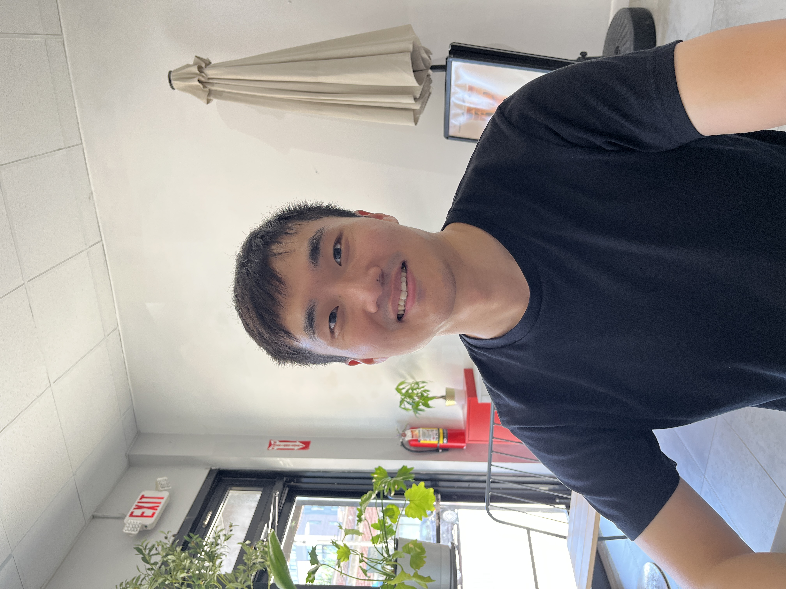

I am an Economics PhD student at UNC-Chapel Hill interested in macroeconomics, innovation, firm and industry dynamics, and economic growth.
This paper develops a Schumpeterian growth model with endogenous industry life cycles. Potential entrants choose whether to join an existing industry or create a new one. Industries begin as monopolies, attract followers, and gradually mature. Individual industries follow non-stationary paths, yet the economy exhibits steady aggregate growth with continual sectoral rotation. The model yields a decomposition of growth into variety creation, frontier innovation, and follower catch-up, and opens a policy margin absent from conventional frameworks with an exogenous set of industries. Because entrants cannot fully appropriate the knowledge gains from new industries, the decentralized equilibrium creates too few varieties. Calibrated to U.S. data, equal-cost policy experiments suggest that subsidies to variety creation may generate larger gains in growth and welfare than subsidies to incumbent R&D in the model.
UNC Chapel Hill
Seoul National University